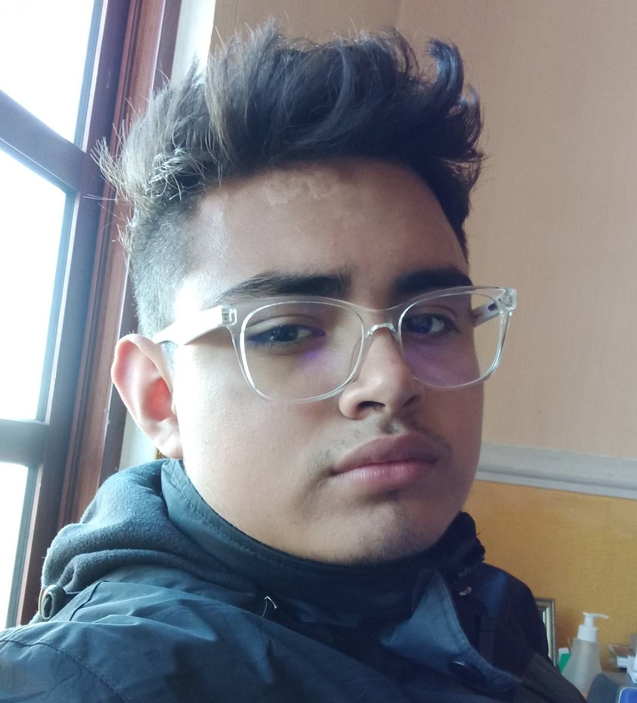

Ismael Díaz
Writer, scientific divulgator,
software developer.
Datos Generales
Birthday: 06/07/2004
Complete Name: Ismael Alejandro Díaz Tiburcio
CURP: DITI040706HDZBSA9
Address: Av.Civilizaciones, Dep.401, Col.El Rosario
Contact Info:
Phone number: 5523411248
E-mail: diaz.tiburcio.ismael@gmail.com
Educaction
Highschool-CECyT No.9 "Juan de Dios Bátiz Paredes"
Programming technical career-CECyT No.9 "Juan de Dios Bátiz Paredes"
Certified as "Database Curator"-Fundación Carlos Slim
Certified as "Cinematography"-Centro Cultural Xitle
School achievements
Fisrt place on the
"Concurso de Oratoria nivel zona escolar"
Second place on the
"Concurso Regional de Oratoria de la Suprema Corte de Justicia de la Nación"
Experience
"Restaurante Xitle" (2017-2019):
Kitchen helper
ITESCA (2019-...):
Research Assistant
Colloquio Magazine (2020-...):
Director & writer of the scientific divulgation area; director of the radio program "Concienci-Ah!".